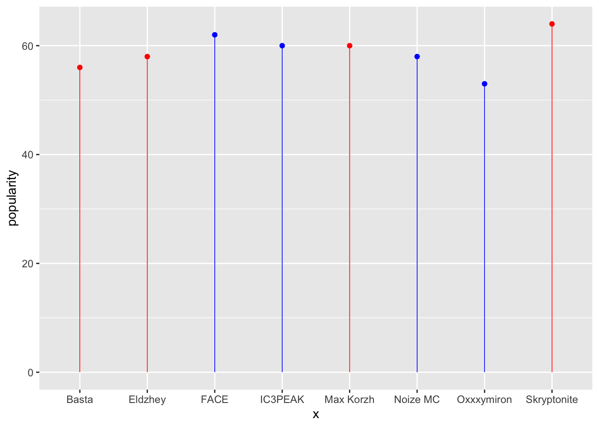
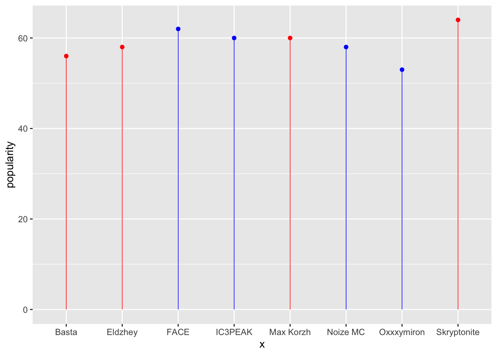
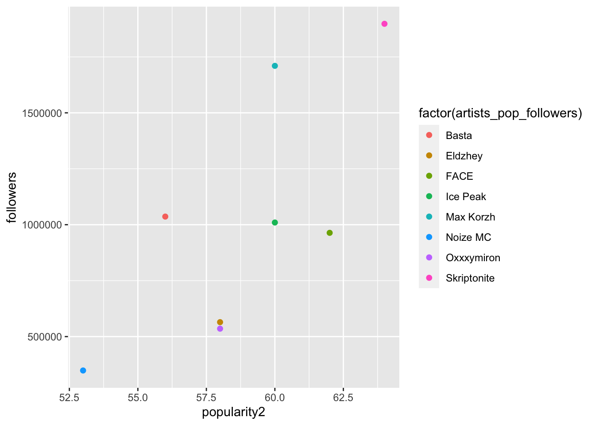

Warning in geom_point(color = ifelse(data$x %in% c("Oxxxymiron", "Noize MC", :
Ignoring unknown parameters: `linewidth`
An Analysis of Russian Artist Popularity Amid the War in Ukraine
Amid much of the Western world’s efforts to sanction Kremlin-affiliated enterprises and Russian businesses, the movement to limit engagement with Russian popular culture has been an interesting side effect of the conflict. Following Russia’s escalated invasion of Ukraine in February 2022, many Ukrainians and Ukrainian allies have rejected any forms of cultural engagement with Russian artists and the Russian language, which ranges from boycotting Western businesses still operating in the Russia and has trickled down to the music people listen to. This research paper looks at data collected through Spotify API to understand how the popularity of openly pro- and anti- Kremlin Russian musicians has shifted since the war began, looking at a time period between February and October 2022, taking into account the six months during which there was the most action in terms of sanctioning and banning Russian outlets (and vice versa within Russia and its bans of Western organizations). Among the pro-Kremlin artists are Basta, Eldzhey, Max Korzh, and Skryptonite, while the anti-Kremlin artists (many of whom have been banned from Russia) are FACE, IC3PEAK, Noize MC, and Oxxxymiron The paper will also explore the relationship between an artist’s popularity rating and their follower count, to see how it may have shifted and changed over time.
Further, the second part of this paper will take from literature around other social media outlets which analyzes how recommendations can lead users down certain rabbit holes. While these can sometimes be harmless, the worst cases can lead people down pathes to radicalization, entrenching users into information environments that spread mis- and disinformation, conspiracy theories, and far-right rhethoric. This paper analyzes how Spotify’s recommendation features encourages or discourages users to engage with Russian users, and whether it is able to distinguish between the political affiliations of different artists.
This paper is divided into several key sections. The Data section {Section 2} will outline where the data is from and what main variables were explored in the dataset. All of the data visualizations will be included in this section and will seek to show the various ways popularity and total follower counts can offer insights into larger trends among Russian-speaking audiences. There will also be several visualizations looking at the get_related_artists function and how it can offer insights into Spotify’s API algorithm. Next, the Results section {Section 4} will provide an overview of the main findings that can be made by the data visualizations, which will be further explored within the {Section 5} section, which will have three main discussion points that draw on conclusions that can be made based on the data. The project findings and limitations can be found in the last section {Section 5.4}, which will discuss the various issues with the dataset and the Spotify API apparatus, as well as potential improvements for future projects and a few thoughts on how my personal biases impacted the results.
This paper uses data collected using the Spotify API “spotifyr” (Charlie Thompson and Wolff 2022), and visualizes data from four top pro-Kremlin Russian artists and four top anti-Kremlin Russian artists to understand how and if their popularity on Spotify has been affected since the start of the escalated invasion of Ukraine. As part of this, the main variables that were used in this project include popularity, total followers, artist name, which were extracted using the get_artists function. In addition, I used data from the get_related_artists function, that shows the top 20 artists that come up in Spotify’s recommendations when searching any given musician. This paper uses R (R Core Team 2020) to analyze the dataset, and several R packages were included in the project, including “tidyverse” (Wickham et al. 2019), “dplyr” (Wickham et al. 2021), and “knitr” (Xie 2021).
To start, {Figure 1} hones in on the popularity variable and compares the popularity between the pro- (in red) and anti-Kremlin (in blue) artists
Warning in geom_point(color = ifelse(data$x %in% c("Oxxxymiron", "Noize MC", :
Ignoring unknown parameters: `linewidth`
Next, {Figure 2} looks at whether there is a correlation between the artists’ follower counts and their popularity score.

Next, the following few visualizations will focus on the second part of this paper’s analysis, which focuses on the recommendations function of Spotify and the role it may play in encouraging users to engage with more pro-Russian artists that are available on the platform. In it, we look at the recommendations for Eldzhey, who is one of Russia’s most prominent rappers and has been openly supportive of the war in Ukraine. He has been officially banned from entering Ukraine, following a concert he gave in 2018 in the Russian-occupied region of Crimea.
Below is a logistic regressive model that looks at Skryptonite (the most popular pro-Putin artists) and FACE (most popular anti-Kremlin musician), reviewing the top 20 artists that appear as recommendations from Spotify for each artist. A manual analysis was conducted to determine whether a given recommended musician was supportive of the Putin regime or not, with those being deemed pro-Kremlin being assigned a “1” value and those against Putin being assigned “0”.
This code is performing a logistic regression analysis to investigate whether an artist’s political stance (pro-Russia or anti-Russia) is associated with the recommendations Spotify provides for them.
The data.frame function creates a dataframe called data which contains two columns: Russia and recommendations. The Russia column contains binary values indicating whether the artist is pro-Russia (1) or anti-Russia (0), and the recommendations column contains binary values indicating whether the recommended artists are also pro-Russia (1) or anti-Russia (0).
The glm function fits a logistic regression model to the data, with recommendations as the outcome variable and Russia as the predictor variable. The family argument specifies that a binomial distribution should be used, since the outcome variable is binary.
The coef function extracts the coefficients from the fitted model, which represent the log odds of being recommended pro-Russia artists given that an artist is pro-Russia (compared to being anti-Russia).
The exp(coef(model)) code computes the exponentiated coefficients, which represent the odds ratios of being recommended pro-Russia artists given that an artist is pro-Russia (compared to being anti-Russia).
This code performs a logistic regression analysis on a dataset and visualizes the output using the kable and kableExtra packages in R.
The first block of code creates a data frame called data that includes two variables, Pro_Russia and Spotify_Recommendations. Pro_Russia is a binary variable indicating whether or not an artist is pro-Russia, and Spotify_Recommendations is a binary variable indicating whether or not that artist is recommended on Spotify. The second block of code applies a logistic regression model to the data using the glm function. The dependent variable is Spotify_Recommendations and the independent variable is Pro_Russia. The model is stored in an object called model. The third block of code extracts the model coefficients from model using the broom::tidy() function from the broom package. The results are stored in a data frame called model_coef. The fourth block of code uses kable to create an HTML table of the model coefficients. The align argument specifies the alignment of the columns, and kable_styling formats the table with CSS styles. The fifth block of code prints the table to the console.
Finally, the stargazer function is used to generate an HTML table that displays the results of the logistic regression model. The type argument specifies that an HTML table should be generated, and the out argument specifies the name of the output file. the glm model works like this - your first variable is the outcome (y)and the second one, after the ~ is the predictor variable (x).so in this code you’re looking at the influence of whether or not an artist is pro-Russia (0 = they’re not)on whether or not the recommended artists are also pro-Russian (0 = they’re not)
| term | estimate | std.error | statistic | p.value |
|---|---|---|---|---|
| (Intercept) | 20.56607 | 3964.631 | 0.0051874 | 0.9958611 |
| Pro_Russia | -18.83147 | 3964.631 | -0.0047499 | 0.9962102 |
There are several key results that can be gleaned from the above visualizations. First, as {(fig_popularity?)} shows, we can see that the pro-Kremlin artists (who are outlined in red) and the anti-Kremlin artists (in blue) do not have huge differences in popularity among Spotify users. We can see that Skryptonite, the Russian rapper is among the most openly supportive of the Putin regime, ranks as the most popular, though by a very small margin. The least popular artist appears to be Oxxxymiron, who has been incredibly vocal about being against the war in Ukraine, and has since been banned within Russia and forced to leave the country.
Next, {Figure 2} looks at the correlation between total follower counts and the popularity number assigned by Spotify. What can be seen in this graph is that, as with {(fig_popularity?)}, staunchly pro-Putin rapper Skryptonite has the most amount of followers and the highest popularity score. Noize MC, who is ardently anti-Putin, has both the lowest popularity rating and lowest amount of followers. Interestingly, Oxxxymiron and Eldzhey, who are on very opposite ends of the political spectrum, ranked very close in both popularity and follower count.
This section will offer a summary and discussion of the main findings that emerged out of this report.
The first finding, as outlined in {Figure 1} is that the political affilation of a certain artist does not seem to impact their popularity among listeners.
Next, the second main finding is that, while the model’s numbers are not statistically significant, reviewing the actual artists demonstrates that Spotify is encouraging engagement with pro-Russian musicians on the platform through its recommendations.
Finally, another key finding of this paper is that while content-wise, many of the pro-Russian artists produced media that is similar, they did not have a lot of overlap in terms of Spotify’s recommendations.
There are number of project limitations that should be considered when reviewing this data. First, the Spotify API posed a lot of issues when it came to accessing telling data. When initially setting out to do this project, I had intended to track the popularity of Russian and Ukrainian artists on Spotify over the course of the first six months following the Russian invasion of Ukraine. However, after many, many attempts, and becoming overly familiar with all of the functions within the Spotify R package {Charlie Thompson and Wolff (2022)}, it became apparent that it is impossible to access either an artist’s popularity rating or monthly listeners number of the course of a specified period of time without the use of a Third-Party software to do so. Had I been successful in this, it would have been interesting to see how and if the popularity of various artists changed over the course of the war, particularly as people continued to make everyday, conscious choices in boycotting products and artists associated with Russia. Moreover, there is also a function that allows developers to see the popularity of an artist within certain Spotify markets, but it also was difficult to use and hard to actually gain this data. After a lot of trial and error, this paper was able to get a few key variables about artists, but future work in this could seek to review more deeply the question of Russsian and Ukrainian musical popularity over time and analyzing differences within various key markets.
In addition, my own personal biases may have played a role in the decision-making process as it relates to reviewing the artist’s political affiliations. As mentioned above, the criteria for deciding whether an artist was supportive of the Putin regime or not was based on a review of several factors. First, I analyzed their respective social media pages (namely Facebook, VKontakte, and Instagram) to see if they have posted any statements online about their stance on Russia’s invasion of Ukraine. If an artist did not have any statements or other symbols of solidarity to Ukraine, I assumed that they were pro-Kremlin, or at the very least, unwilling to use their online platforms to speak out against the regime. This could have led to a false assumption on whether someone was supportive of Putin, because as is well-documented, saying openly critical things of the Russian government poses many personal risks to not only musicians and artists, but ordinary people. Another factor that I incorporated in this decision-making process was seeing if they had any concerts happening in Russia or if they were performing internationally. This serves as a very telling indicator because most experts say that only artists who are pro-Putin (or at least silently complicit) are still able to perform within Russia without being banned by authorities. In this sense, while I attempt to cross reference various indicators of political affilation, there is inevitably room for error in this approach.
Finally, another important point to note is that, as mentioned above, Spotify has been banned in Russia and the organization has stopped all of its operations within the country in March 2022. While it is difficult to know how many people within Russia are using VPNs to circumvent government bans and access Spotify, this paper does not address how and if the ban has impacted Russian artist popularity since the start of the ban (largely due to the aforementioned reasons). Regardless, it is important to note that the ban must have played some kind of role in their popularity, as not all people are able to use VPNs to gain access to Spotify within Russia. Moreover, while this seems to be related to privacy issues, the Spotify API does not allow developers to access demographic data of a certain artist’s listeners. This data would have provided invaluable insights, particularly in showing which countries have the most users actively listening to either pro- or anti-Kremlin artists. This data could then be tied to larger ideas on the proliferation of Russian disinformation around the world, and could offer valuable insights into the impact and permeation of pro-Kremlin narratives, and how they translate into individual’s musical preferences and choices.